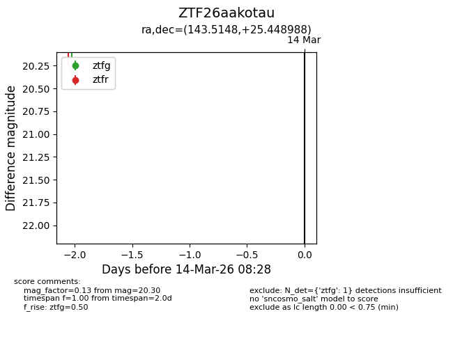
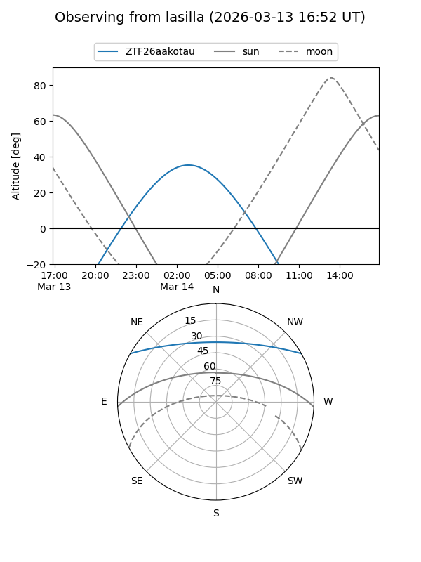
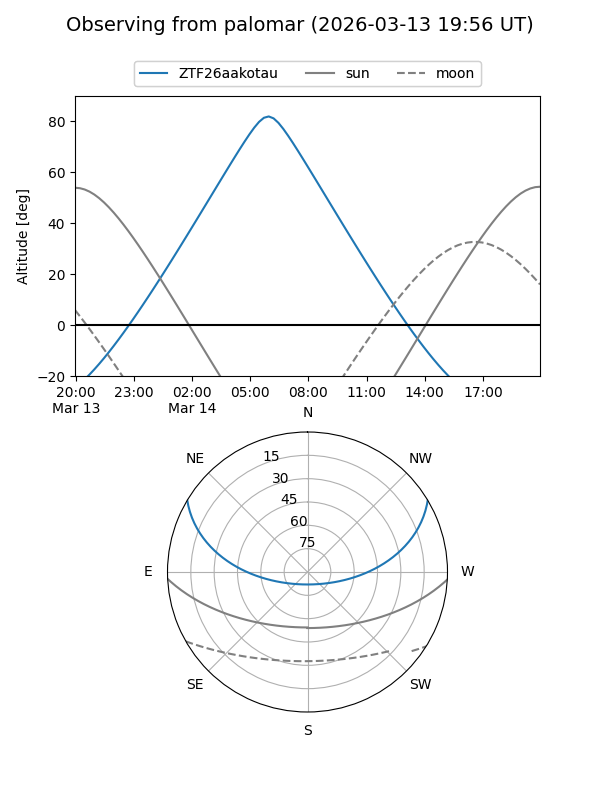

ZTF26aakotau
Target ZTF26aakotau at 2026-03-14 08:29
Aliases and brokers:
FINK: link
Lasair: link
ALeRCE: link
alt names
ZTF26aakotau (ztf,fink_ztf)
Coordinates:
equatorial (ra, dec) = 143.5148,+25.44899
equatorial (HMS+DMS) = 09:34:03.55,+25:26:56.36
galactic (l, b) = (203.4686,+46.01410)
Flags:
Photometry:
last ztfg=20.30
1 ztfg detections
Lightcurve

Visibility


Additional plots